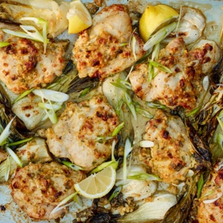

← All recipes
Sheet-Pan Scallion Chicken with Bok Choy

Servings: 4 servings ·
Ingredients
- 4 scallions, trimmed and finely chopped (about 1/2 cup), plus more for garnish
- 3 tablespoons Dijon mustard
- 3 tablespoons minced fresh ginger (from one 3-inch piece)
- 2 tablespoons minced garlic
- 1 tablespoon white miso paste
- 2 teaspoons turbinado or brown sugar
- Kosher salt and freshly ground black pepper
- 1/2 cup safflower or canola oil
- 1 1/2 pounds baby bok choy, halved lengthwise, or large broccoli florets
- 8 bone-in, skin-on chicken thighs (about 3 pounds), skins removed
- Steamed rice or mashed potatoes, for serving
- Lemon wedges, for serving
Directions
- Heat oven to 450 degrees. In a small bowl, combine scallions, mustard, ginger, garlic, miso, sugar, 1 teaspoon salt, 1/2 teaspoon pepper and 6 tablespoons of the oil. Mix well.
- On a rimmed baking sheet, toss bok choy with the remaining 2 tablespoons oil and season with salt and pepper, then spread in an even layer. Season chicken with salt and pepper, arrange on top of bok choy and rub chicken all over with the scallion-mustard marinade.
- Roast until chicken is cooked through and vegetables are tender, about 30 minutes.
- Serve chicken and vegetables over rice or mashed potatoes. Spoon pan juices over the chicken and garnish with scallions. Serve with lemon wedges.
Original source: cooking.nytimes.com